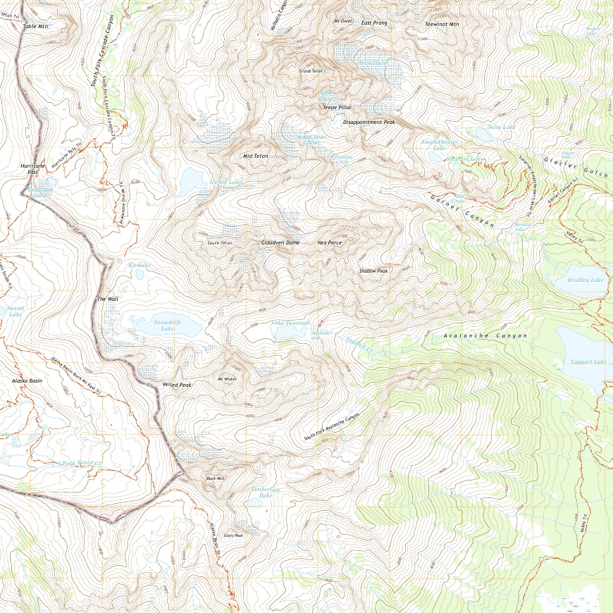
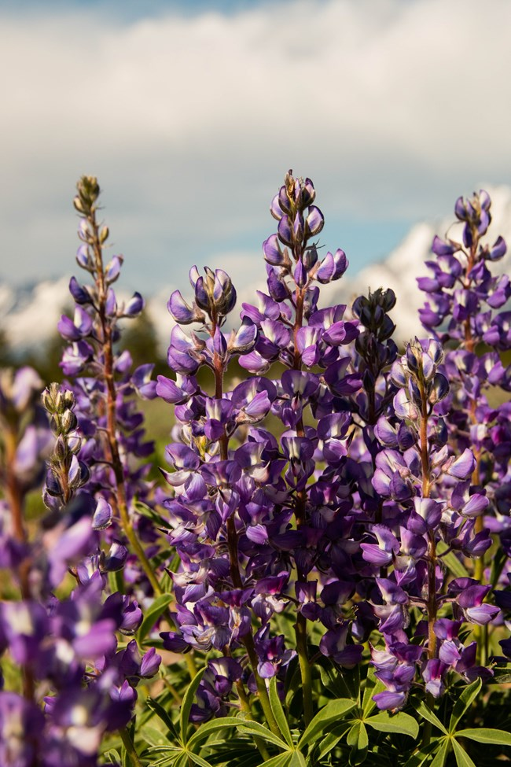

One star
never moved.
For centuries, sailors, caravans, and cartographers steered by the Northstar. It gave them a fixed point in a world that kept shifting, and the confidence to leave the coastline behind.
NORTHSTAR STUDIOS / FIELD EDITION 01
ONE FIXED POINT - INFINITE WORLDS
EXPLORE OUR GAMES
SURVEY / GRAND TETON
43°44′ N
110°48′ W

THUNDERBIRD / ON THE HORIZONFEATURED GAME
BUILDING THE NEXT WORLD.
Thunderbird is a new Northstar project. Check back for details, screenshots, and updates.
GAME DETAILS MORE TO COME SOONTHE STUDIO
Northstar Studios is an independent game studio with a sense of direction and a curiosity for what lies beyond.
We build games and interactive experiences around exploration, discovery, and play.
One fixed point - infinite worlds. That’s our starting point. The next frontier is what we make of it.
ABOUT THE STUDIO01 / OUR GAMES
Made to be played.
Built to take you somewhere new.
02 / THE STUDIO
Games are our way of charting the unknown. We bring a background in programming and interactive media to worlds, systems, and experiences made for curious players.
MEET NORTHSTAR ↗PRESS & MEDIA ↗For centuries, sailors, caravans, and cartographers steered by the Northstar. It gave them a fixed point in a world that kept shifting, and the confidence to leave the coastline behind.
Every crossing began the same way: someone chose to trust the light and sail beyond what was known. Each voyage added a few lines to the chart for whoever came next.
The same idea guides everything here. We build the tools, stories, and experiences that give people a bearing, then take them somewhere they haven't been.
EXPLORE THE GAMESCHART THE UNKNOWN.
↑CHART THE UNKNOWN.
ONE FIXED POINT - INFINITE WORLDS